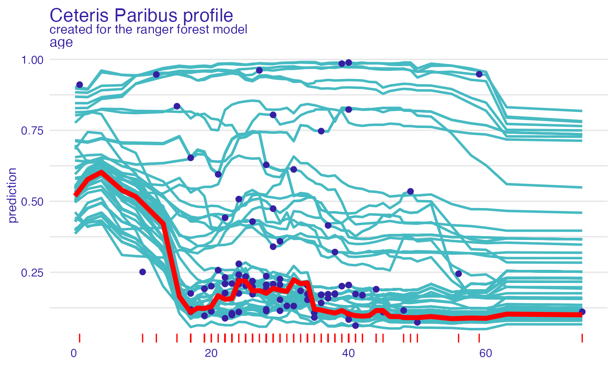

Function show_profiles adds a layer to a plot created with
plot.ceteris_paribus_explainer.
show_profiles( x, ..., size = 0.5, alpha = 1, color = "#371ea3", variables = NULL )
| x | a ceteris paribus explainer produced with function |
|---|---|
| ... | other explainers that shall be plotted together |
| size | a numeric. Size of lines to be plotted |
| alpha | a numeric between |
| color | a character. Either name of a color or name of a variable that should be used for coloring |
| variables | if not |
a ggplot2 layer
Explanatory Model Analysis. Explore, Explain, and Examine Predictive Models. https://pbiecek.github.io/ema/
library("DALEX") library("ingredients") selected_passangers <- select_sample(titanic_imputed, n = 100) selected_john <- titanic_imputed[1,] model_titanic_glm <- glm(survived ~ gender + age + fare, data = titanic_imputed, family = "binomial") explain_titanic_glm <- explain(model_titanic_glm, data = titanic_imputed[,-8], y = titanic_imputed[,8], label = "glm", verbose = FALSE) cp_rf <- ceteris_paribus(explain_titanic_glm, selected_passangers) cp_rf_john <- ceteris_paribus(explain_titanic_glm, selected_john) plot(cp_rf, variables = "age") + show_profiles(cp_rf_john, variables = "age", size = 2)# \donttest{ library("ranger") model_titanic_rf <- ranger(survived ~., data = titanic_imputed, probability = TRUE) explain_titanic_rf <- explain(model_titanic_rf, data = titanic_imputed[,-8], y = titanic_imputed[,8], label = "ranger forest", verbose = FALSE) cp_rf <- ceteris_paribus(explain_titanic_rf, selected_passangers) cp_rf_john <- ceteris_paribus(explain_titanic_rf, selected_john) cp_rf#> Top profiles : #> gender age class embarked fare sibsp parch _yhat_ #> 515 female 45 2nd Southampton 10.1000 0 0 0.8125426 #> 515.1 male 45 2nd Southampton 10.1000 0 0 0.1098901 #> 604 female 17 3rd Southampton 7.1701 1 0 0.4618520 #> 604.1 male 17 3rd Southampton 7.1701 1 0 0.1108578 #> 1430 female 25 engineering crew Southampton 0.0000 0 0 0.7440738 #> 1430.1 male 25 engineering crew Southampton 0.0000 0 0 0.2346546 #> _vname_ _ids_ _label_ #> 515 gender 515 ranger forest #> 515.1 gender 515 ranger forest #> 604 gender 604 ranger forest #> 604.1 gender 604 ranger forest #> 1430 gender 1430 ranger forest #> 1430.1 gender 1430 ranger forest #> #> #> Top observations: #> gender age class embarked fare sibsp parch _yhat_ #> 515 male 45 2nd Southampton 10.1000 0 0 0.1098901 #> 604 male 17 3rd Southampton 7.1701 1 0 0.1108578 #> 1430 male 25 engineering crew Southampton 0.0000 0 0 0.2346546 #> 865 male 20 3rd Cherbourg 7.0406 0 0 0.1124048 #> 452 female 17 3rd Queenstown 7.1408 0 0 0.6530898 #> 1534 male 38 victualling crew Southampton 0.0000 0 0 0.1729712 #> _label_ _ids_ #> 515 ranger forest 1 #> 604 ranger forest 2 #> 1430 ranger forest 3 #> 865 ranger forest 4 #> 452 ranger forest 5 #> 1534 ranger forest 6#> Top profiles : #> _vname_ _label_ _x_ _yhat_ _ids_ #> 1 age ranger forest 0.1666667 0.5218831 0 #> 2 age ranger forest 2.0000000 0.5590009 0 #> 3 age ranger forest 4.0000000 0.5760272 0 #> 4 age ranger forest 7.0000000 0.5150417 0 #> 5 age ranger forest 9.0000000 0.4988154 0 #> 6 age ranger forest 13.0000000 0.4224053 0plot(cp_rf, variables = "age") + show_observations(cp_rf, variables = "age") + show_rugs(cp_rf, variables = "age", color = "red") + show_profiles(cp_rf_john, variables = "age", color = "red", size = 2)# }